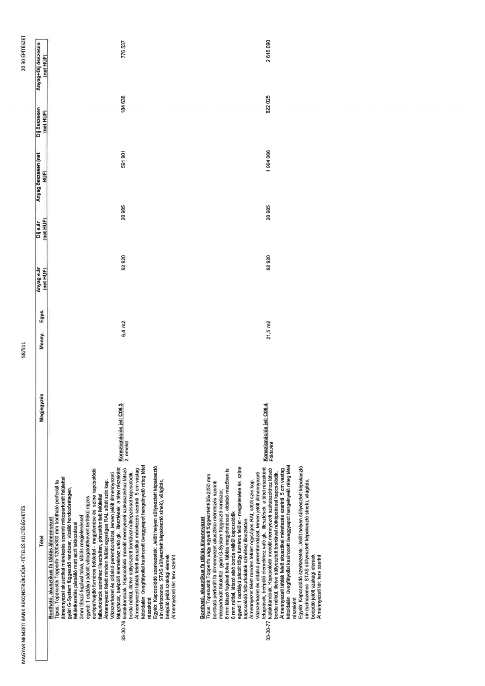

| Tétel | Megjegyzés | Menny. | Egys. | Anyag e.ár (net HUF) | Díj e.ár (net HUF) | Anyag összesen (net HUF) | Díj összesen (net HUF) | Anyag+Díj összesen (net HUF) |
|---|---|---|---|---|---|---|---|---|
| 33-30-76 Bontható, akusztikus fa táblás álmennyezet Típus: Topakustik Topperfo 1200x300 mm bontható perforált fa álmennyezet akusztikai méretezés szerinti mikroperforált felülettel gyári G-System függesztő rendszer, vízálló hordozórétegen, felületkezelés páraálló matt acril lakkozással 3mm látszó fugával tolva, táblás megjelenéssel egyedi 1 osztályú pácolt válogatott/kevert területi rajzos európai/vajdadi furnéros felülettel - megjelenése és színe kapcsolódó falburkolatok színéhez illesztetten, pórustömített felülettel Álmennyezet felett minden felület egységes RAL sötét szín kap. Vázszerkezet és oldalsó perembordázat, terven jelölt álmennyezeti felugrások, beépülő elemekhez való gk. illesztések a tétel részeként kialakítandók. Kapcsolódó monolit mennyezeti szakaszokhoz látszó borda nélkül, illetve süllyesztett bordával nútképzéssel kapcsolódik. Álmennyezeti táblák felett akusztikai méretezés szerinti 5 cm vastag kétoldalán üvegfátyollal kasírozott üveggyapot hangelnyelő réteg tétel részeként Egyéb: Kapcsolódó szerkezetek: Jelölt helyen süllyesztett képakasztó sín (színazonos STAS süllyesztett képakasztó sínek), világítás, beépülő jelölt szakági elemek Álmennyezeti tér: terv szerint | Konszignációs jel: C06.3 2. emelet | 6,4 | m2 | 92 920 | 28 985 | 591 901 | 184 636 | 776 537 |
| 33-30-77 Bontható, akusztikus fa táblás álmennyezet Típus: Topakustik Topperfo vagy egyedi függesztett 805x2250 mm bontható perforált fa álmennyezet akusztikai méretezés szerinti mikroperforált felülettel gyári G-System függesztő rendszer, 6 mm látszó fugával tolva, táblás megjelenéssel, oldalsó mezőben is 6 mm núttal, látszó alsó borda nélkül kapcsolódik egyedi 1 osztályú pácolt tölgy furnéros felület - megjelenése és színe kapcsolódó falburkolatok színéhez illesztetten Álmennyezet felett minden felület egységes RAL sötét szín kap. Vázszerkezet és oldalsó perembordázat, terven jelölt álmennyezeti felugrások, beépülő elemekhez való gk. illesztések a tétel részeként kialakítandók. Kapcsolódó monolit mennyezeti szakaszokhoz látszó borda nélkül, illetve süllyesztett bordával nútképzéssel kapcsolódik. Álmennyezeti táblák felett akusztikai méretezés szerinti 5 cm vastag kétoldalán üvegfátyollal kasírozott üveggyapot hangelnyelő réteg tétel részeként Egyéb: Kapcsolódó szerkezetek: Jelölt helyen süllyesztett képakasztó sín (színazonos STAS süllyesztett képakasztó sínek), világítás, beépülő jelölt szakági elemek Álmennyezeti tér: terv szerint | Konszignációs jel: C06.4 Földszint | 21,5 | m2 | 92 920 | 28 985 | 1 994 066 | 622 025 | 2 616 090 |
